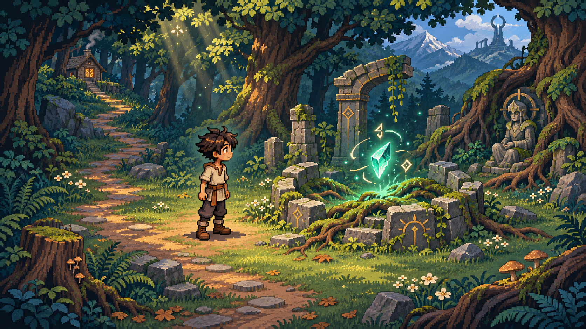
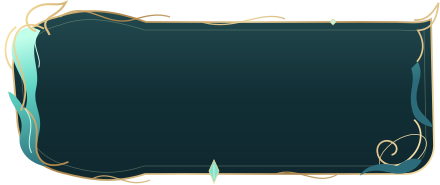
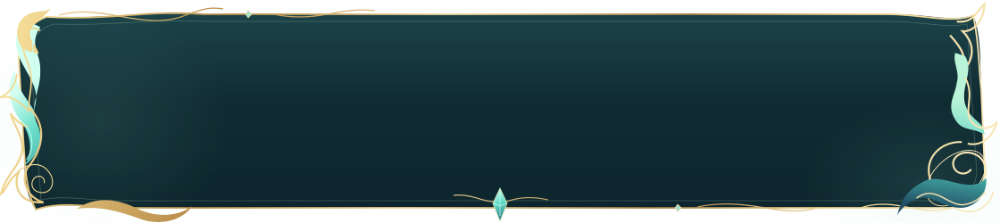

Caelan PRÓLOGO
VIDA38 / 38
MANÁ12 / 12
FALDAS DE LA GRAN MONTAÑASendero del faro
Una luz entre las raíces
Investiga la resonancia.
MOCHILA EN RIESGO
4Madera2Mineral2Pociones

CAELAN
¿Por qué siento que esta luz me conoce?